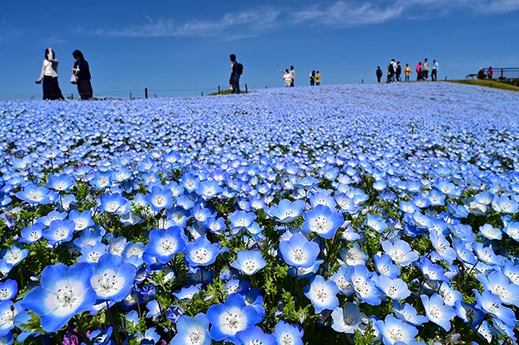
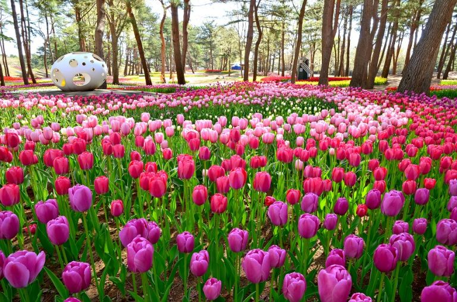

Hitachi Seaside Park
Japan's Floral Paradise
Why Visit Hitachi Seaside Park?
Hitachi Seaside Park combines a large-scale garden space with basic amusement attractions in a coastal setting. The main seasonal features are the flowers, which change throughout the year - blue nemophila in spring is the most photographed section. The park layout is organized with walking paths and different zones, making it easy to navigate. There are beaches, restaurants, and other standard amenities for a full day visit. The location near the Pacific coast provides natural scenery and generally decent weather. The park size is manageable for a day trip from Tokyo and clearly designed for accessibility. If you're interested in gardens, seasonal flowers, coastal landscapes, or just spending a day outside with structured activities and amenities, this park works straightforwardly for that purpose.
Hitachi Seaside Park Gallery

